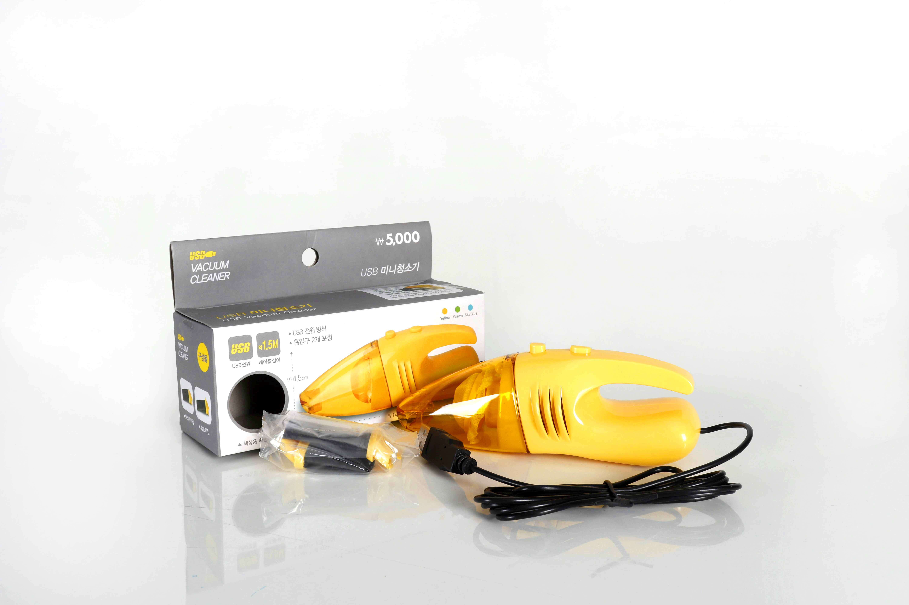

소중한 노트북에
깔끔함을 더해줄 청소 세트
5종의 구성품은 언제 어디서나 깔끔한 작업환경을 조성해줍니다.
건전지등 다른 기타요소들이 필요하지 않습니다.
키보드, 화면, 노트북의 표면 모두를 한번에 청소해보세요.

01 미니 USB청소기
USB연결로 어디서나 편리한 먼지 흡입.
더 이상 과자 부스러기를 두려워하지 마세요.
02 젤리 클리너
강력한 흡착력으로 키보드 사이사이의
먼지 한 톨까지 제거하세요.
03 모니터 크리너
빠른 휘발성으로 물 자국걱정없이 깨끗하게!
키보드의 기름기까지 함께 제거하세요.
04 먼지제거 스프레이
초강력 바람으로 키보드와 스피커 밑
깊숙히 자리잡은 먼지들을 날려보내세요.
05 스티커 제거제
끈적이는 무언가가 붙었을 때,
질려버린 스티커를 떼고 싶을 때 사용하세요.